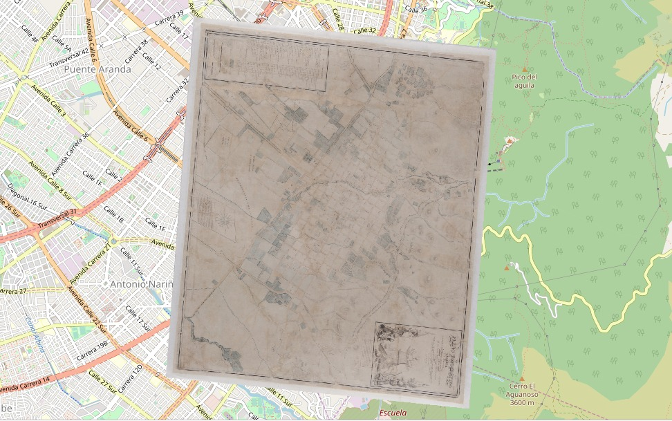
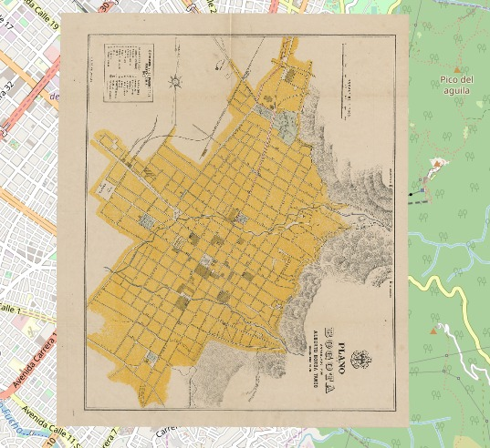
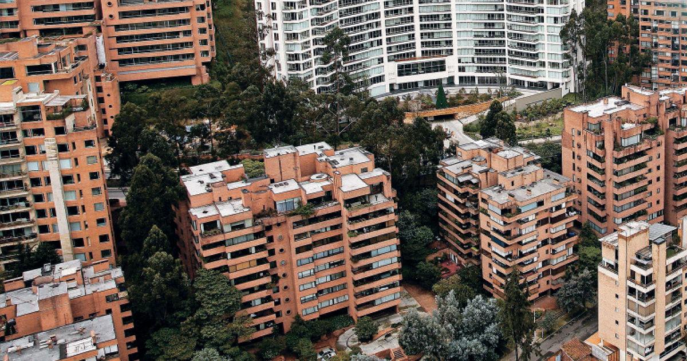
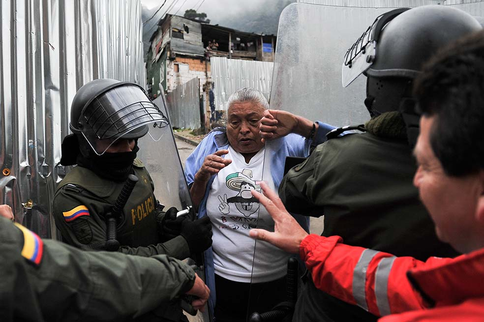

Bogotá como lugar crítico en la lucha por la tierra
La capital del país es uno de los lugares que, increíblemente, se ha visto más afectado por la lucha de poderes en el acceso a la tierra. Este representa el lugar con más presuntas oportunidades para los desplazados internos de Colombia
Este mapa refleja puntos críticos dentro de la ciudad donde se han visto enfrentados el poder colectivo y el poder económico. Haz clic en el ícono superior izquierdo para ver el detalle de los puntos marcados
Configuración de la tierra
La ciudad de Bogotá ha mutado considerablemente desde la época colonial, donde comenzó su planeación como una ciudad mayormente urbana. La expansión en general se ha dado hacia la periferia con los barrios invasivos y las obras masivas de construcción
Mapa 1 - Bogotá en el siglo XIX
La primera impresión que se tiene al observar los planos de la ciudad decimonónica es la de un estancamiento prolongado en el área que conforma la ciudad. Pues la característica urbana producto de la dinámica demográfica que se estaba desarrollando en ese entonces, era de concentrar a los habitantes. La densificación de la ciudad, ocasiono que el proceso expansivo comenzara de adentro hacia afuera. Esto tuvo como resultado el aumento del área urbana en 1.8 veces la existente a comienzos del siglo 19. Este aumento se visualizó, en su mayoría, a través de la urbanización de los arrabales y de las zonas de cultivo que preexistían entonces dentro del perímetro urbano colonial.
Mapa 2 - Bogotá en el siglo XX
Se puede observar un cambio súbito en la cartografía a comienzos del siglo XX con respecto a la del siglo XIX, pues los planos señalan a Chapinero jalonando la expansión de la superficie hacia el norte y Las Aguas hacia el sur. Lo mencionado anteriormente, fue producto del proceso expansivo de la ciudad hacia los suburbios debido al hacinamiento que se había generado a mediados del siglo. La catedral dejo de ser la parroquia más poblada de la urbe. En su lugar, Santa Bárbara, expandiéndose al suroriente, paso a ser la zona más poblada de la capital decimonónica. De igual manera, Las Nieves, creciendo hacia el oriente hasta dar forma a la parroquia de las Aguas, sobrepaso en población a la catedral.
Escenario: Barrio los Olivos
En Bogotá existen barrios de estrato alto que reflejan las condiciones de vida de las personas más ricas del país. El barrio de la foto es el barrio Rosales, que se caracteriza por ser un conjunto de construcciones lujosas que se realizaron sobre los cerros de Bogotá en predios que no se consideraban viables siglos atrás. Este es el mismo modelo que se quiso implantar en el barrio Los Olivos de Chapinero: Apropiación de territorios de bajo costo para construir barrios muy costosos
 En la otra cara de Bogotá existen barrios populares y con condiciones de vida muy precarias, que reflejan la desigualdad en el país. Los barrios invasivos son una característica de la periferia de la ciudad, pues estos se componen de personas sin oportunidades que se han adaptado a condiciones inviables del territorio e instalan viviendas con lo que pueden. Este fue el caso de los habitantes originales del barrio los Olivos en Chapinero, quienes construyeron una comunidad con sus propias manos, y fueron amenazados para dejar el territorio, vendiendo sus tierras a "precio de cartón"
En la otra cara de Bogotá existen barrios populares y con condiciones de vida muy precarias, que reflejan la desigualdad en el país. Los barrios invasivos son una característica de la periferia de la ciudad, pues estos se componen de personas sin oportunidades que se han adaptado a condiciones inviables del territorio e instalan viviendas con lo que pueden. Este fue el caso de los habitantes originales del barrio los Olivos en Chapinero, quienes construyeron una comunidad con sus propias manos, y fueron amenazados para dejar el territorio, vendiendo sus tierras a "precio de cartón"
El conflicto
Los habitantes, enfurecidos, han resistido ante los intereses elitistas para mantener el territorio que es parte de su identidad